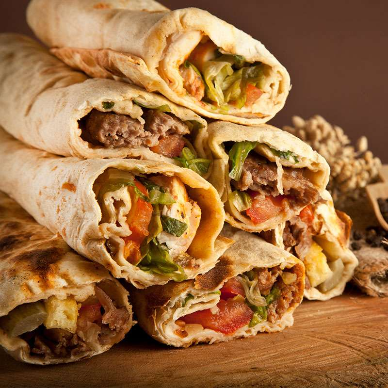

Shawarma (carne marinada y asada)
Ingredientes:
- 500 g de carne de cordero, pollo o ternera (en tiras finas)
- 2 cucharadas de aceite de oliva
- 1 cucharadita de comino molido
- 1 cucharadita de pimentón dulce
- 1 cucharadita de canela molida
- 1 diente de ajo picado
- Jugo de 1 limón
- Sal y pimienta al gusto
- Pita o pan árabe para servir
- Vegetales (lechuga, tomate, cebolla) y salsas (yogur, tahini) al gusto

Pasos:
- En un bol, mezcla el aceite de oliva, comino, pimentón, canela, ajo, jugo de limón, sal y pimienta.
- Agrega la carne y marina durante al menos 1 hora (mejor si es toda la noche).
- Calienta una sartén grande a fuego medio-alto y cocina la carne marinada hasta que esté dorada y cocida (unos 10-15 minutos).
- Retira del fuego y deja reposar unos minutos antes de servir.
- Sirve la carne en pan pita con vegetales frescos y salsas al gusto.
Home